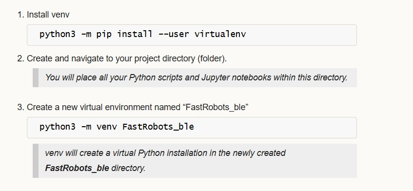

Becky Lee (bl478)
My name is Becky Lee and I am an ECE M.Eng student. I'm excited for this semester and exploring more about robotics. In my free time, I like to learn new cultures and languages.

My name is Becky Lee and I am an ECE M.Eng student. I'm excited for this semester and exploring more about robotics. In my free time, I like to learn new cultures and languages.

In this lab, the objective was to explore the DRV8833 Dual Motor Driver Carriers, assemble our robot, and use open loop control in order to control our robot.
For the motor drivers, I had to parallel couple the inputs and outputs together in order to supply enough current to the motor to make the robot move. I connected AOUT1 and BOUT1 to one side of the motor and AOUT2 and BOUT2 to the other side of the motor. For Motor A, I connected AIN1/BIN1 to pin A0 on the Artemis board and AIN2/BIN2 to pin A3. For Motor B, I connected AIN1/BIN1 to pin A1 on the Artemis board and AIN2/BIN2 to pin A5. A0, A1, A3, and A5 pins were used since according to the datasheet, these are analog pins that can use analogWrite() to write PWM signals to the motor drivers.
We need two different batteries to power the motor drivers. The 750 mAh battery is used to power the Artemis board so that we can send the PWM signals to the input pins of the motor driver. The 850 mAh battery is used to power the output pins of the motor drivers in order to supply enough current to the motors.
Soldering and Testing Motor Drivers
For the motor drivers, I first parallel coupled the inputs and outputs together by using one wire for A1/A2 and one wire for A2/B2. Then, I connected a third wire that attaches to the wires coming out from A1/B1 and A2/B2. Then, I added heat shrink over the three wires. For testing, I first connected one motor driver to an external power supply which I set to 3.7V since that is approximately the voltage coming out of the Artemis board. I then scoped the output using the oscillscope to ensure that I was getting the expected PWM signal on the motor driver.
Setup for Oscilloscope and Power Supply

Results from Oscilloscope
I created a PWM signal using analogWrite(). Since the board takes in 8 bit values, the maximum value is 255. As a result, since I set analogWrite() to 50, the duty cycle should be 50/255 = ~ 20% duty cycle. The picture shows the square wave on the oscilloscope when scoping the output which is what I expected. The first set of pictures demonstrates the PWM signal working for AOUT1/BOUT1. The second set of pictures demonstrates the PWM signal working for AOUT2/BOUT2.

Testing Motor Drivers on Car
Then, I individually tested the motor drivers when they were hooked up to the motors on the car and the power supply which was set at 3.7V. Below are the two motors working while connected the power supply.
Then, I tested the motor drivers out by connecting them to the 850 mAh battery. Below are videos showing the two motors working while connected to the battery.
Assembling the Car
Finally, I was able to assemble the car. I put my ToF sensors on the front and side of the car to get a wider range of visibility of my surroundings. I put the IMU on top of the car. I put the Artemis board, 750 mAh battery, and two motor drivers in the back of the car. I secured everything using double sided tape and rubber bands.

Then, I ran the car on the ground by making the car move forward until the time reached 10 seconds which is when I programmed the car to stop. As you can see, the car has a slight left bias which I will address in a later section.
Lower Limit of PWM
I experimented by manually changing the PWM signal down from the working value of 50 until the wheels just started to turn while on the ground. I tried PWM values of 50, 45, 40, 35, and then 30. I found the lower limit of the PWM to be 30 in order to start moving car.
Calibration Factor
I want to make the car move straight. In order to do that, I need to add in a calibration factor. Since there is a left bias, I knew that I needed to steer the car more towards the right. In order to do that, I needed to add a calibration to the left wheels to make the car turn right. Through experimentation by manually changing the PWM signal sent to the motor drivers, I found the calibration factor to be 1.45. Below is a video showing the car going relatively straight.
Open Loop Control
For open loop control of the robot, I pre-programmed commands to the robot in order to make it go forward, turn right, go backwards and then turn left. I let this set of commands run for 7 seconds and then I stopped the car. Below is a video showing my open loop control.
Frequency of AnalogWrite()
From the oscilloscope measurements, I determined that one cycle takes approximately 2.25 sqaures. Each square is 2.50 ms. Therefore, the frequency for analogWrite() is approximately 1/2.5 ms *2.25 = 177.78 Hz. The frequency of analogWrite() is adequately fast for these motors since most boards have a default value of 490 Hz. If we manually configure the frequency,we can get a more stable PWM signal which will allow for better voltage control, less noise, and more precise control of the power outputted to the motors.
Lowest PWM Once in Motion
I first tried to use a PWM value of 30 to get the robot to overcome friction. However, through experimentation, I found that I was able to find a lower PWM to start and keep the robot in motion which was 10. I was able to get the robot to settle at its slowest speed in about 750 ms. When I talked to one of the TAs, they said that the reason the PWM I found was so low could be that there is more current being supplied to the robot.

In this lab, the objective was to explore the VL53L1X Time-of-Flight Distance Sensor (ToF) and its' limitations.
As per the datasheet, the ToF sensors are hardwired to the I2C address 0x52. Since we want to use both ToF sensors on our robot, I will enable/disable the sensors separately by connecting one of the XSHUT pins of the ToF sensors to a GPIO pin on the Artemis board. Then, I can control when each sensor is active. This allows me to change the I2C address of a sensor programmatically while the system is powered, ensuring that the two sensors don’t interfere with each other’s readings.
The ToF sensors should be placed on the front and side of the robot since they only have a limited range of about 4 meters at maximum and their field of view is only 15-27 degrees. By placing them on the front and side of the robot, we can reduce blind spots and provide a more complete view of the environment which will allow for better obstacle detection.
I decided to use the long QWICC cables so that the ToF sensors can be placed directly on the front and side of the robot so they wouldn't be restricted to just the plane inside of the car. The connections to the ToF sensors are permanent to prevent detachment, while the connections to the board are detachable, enabling the use of different sensors if needed.
Soldering the Battery and ToF Sensors
I cut the wires for the 750 mAh battery and connected it to the JST connector using heat shrink.
For the ToF sensors, I soldered the red wire to the Vin pin, black to the GND, blue to SDA, and yellow to SCL. The purple wire on one of the ToF sensors was connected to the A2 pin on the Artemis board.

I2C Address for ToF Sensors
In order to find the I2C address for the ToF sensor, I ran the Example1_wire_I2C from Examples->Apollo3->Wire. As shown from the picture below, the I2C address is 0x29 which is expected since the last bit indicates whether it is a read/write operation. So, the last bit from the default address 0x52 can be discarded.
ToF Sensor Mode
There are three different modes. The short mode can only measure up to 1.3 meters but it is highly accurate for close ranges. It is also less sensitive to ambient light. Long mode can measure up to 4 meters which is great for detecting long distances but it is more suscpetible to ambient light interference and is less precise when measuring short distances. Medium mode is good for distances up to 3 meters and allows for a longer range with less sensitivity to ambient light. I chose the short range since when we are doing stunts on our robot, we want to be able to stop within a short distance which requires highly accurate measurements.
The range for my ToF sensor is approximately 1250 mm which is close to the datasheet's prediction of 1.3 meters.

In order to measure the accuracy of the ToF sensor, I plotted the difference between the measured distance and the actual distance. For my ToF sensor, it was accurate up to about 1250 mm. After that, the difference in measured vs actual distance was over 100 mm.

For repeatability, I averaged 100 data points over 8 trials and calculated the standard deviation. As shown below, once the distance was greater that about 1300 mm, then the standard deviation was over 200 mm.

The ranging time for the short mode is approximately 29 ms since I need to wait for the ToF sensors to collect data.
When I varied the ranging time from 20 to 35 to 50 to 65 to 80 to 100 ms and measured the distance which I set to a fixed distance of 500 mm, the best ranging times were approximately 20 ms and 50 ms. 20 ms was the better ranging time on average.

ToF Sensors Working in Parallel
In order to get both ToF sensors to work in parallel, I utilized the XSHUT pin. I initialized one ToF sensor's (sensor 2) so that it used the XSHUT pin which is pin 2 (A2 on the board). Then, I set ToF sensor 1 to have a different I2C address while keeping sensor 2 off by setting pin 2 low. Once the I2C address for sensor 1 was set up, I set pin 2 to high and then the second sensor could start running as well. Below is a snippet of my code as well as a screenshot showing the two sensors working in parallel.

Speed Up Execution of Loop
In order to speed up the execution of the loop, I decided to print out the time continously and only print out data from the ToF sensors when new data was ready. I used the function checkForDataReady() to see if new data had come in from the ToF sensor. As shown below, my loop takes on average around 230 ms because it has to wait to get the new data from the sensors and then clear the interrupt before being able to print to the terminal.
ToF and IMU Data
I modified the Arduino and Python code from last lab to record both the ToF distance measurements and complimentary filter pitch and roll IMU data.
Below are graphs showing the IMU data and ToF sensor data respectively.

Infrared Based Distance Sensors
Two different types of infrared sensors are active and passive infrared sensors. Active infrared sensors use an active emitter that emits its own infrared signal. Then, its receiver detects any differences between the original and received signal. This determines the distance. They are used for more precise measurements such as obstacle detection in robotics. Passive infrared sensors detect the infrared signals coming off of any object in its field of view. It does not emit its own infrared signal. Passive infrared sensors are used more for motion detection such as in security systems. Active sensors provide more precise measurements but are more sensitive to interferences from the environment. Passive sensors are cheaper and more energy efficient but are less accurate in their measurements.
Impact of Color and Textures on Distance Measurement
As a control, I used the white cardboard box provided. Then, I tested two other colors: red and black. For textures, I used a piece of leather, a crinkled paper bag, and a bath towel. As can be seen from the first graph which shows different colors, the red and black do slightly worse than the white for the range 250-1110 mm. Therefore, the ToF sensor is more sensitive to darker colors and as a result, it performs worse. The second graph shows the different textures. The crinkled bag and leather did the worst in terms of performance. This suggests that the more textured surface area there is, the worse the performance since the light will be absorbed by these surfaces.
I referenced Mikayla Lahr's page for determining sensor accuracy and reliability. I referenced Daria Kot's page for getting the two ToF sensors to work in parallel.

In this lab, the objective was to become familiar with the accelerometer and gyroscope on the IMU.
For this part of the lab, I had to install the Sparkfun 9DOF IMU Breakout ICM 20948 Arduino Library. To connect the IMU to the Artemis board, I used QWICC connectors.

For this part of the lab, I had to install the Sparkfun 9DOF IMU Breakout ICM 20948 Arduino Library. To connect the IMU to the Artemis board, I used QWICC connectors.
The AD0_VAL corresponds to the value of the last bit of the I2C address which can be changed depending on the I2C address configuration of the board. In my case, it is 1.
As I flip the board, the z value on the acceleration and gyroscope data become negative. As I rotate the board (ie on the y axis), then the x and y values change to be either positive or negative. When I accelerate the board, the x, y, and z values increase.
I also made the LED blink 3 to 4 times to indicate that the IMU was being set up properly.
I used the following equations from class to compute pitch and roll.

Here is the data for the accelerometer at 0 degrees for both pitch and roll.

Here is the data for the accelerometer at -90 and 90 degrees respectively for roll.

Here is the data for the accelerometer at -90 and 90 degrees respectively for pitch.

My accelerometer is quite close to the actual value of -90 and 90 degrees for both pitch and roll. It is only off by about 1-2 degrees. Therefore, I did not do a 2 point calibration.
Based on the graphs shown below for pitch and roll, I determined the cutoff frquency to be about 5 Hz since that was where the noise started to decrease significantly.


I used the following equation from class to compute the low pass filter for the pitch and roll of the accelerometer.

Since the sampling rate was 398.72 for pitch, the alpha value was determined to be 0.0451 For the roll, the sampling rate was 362.58. Therefore, the alpha value was 0.0797. As can be seen from the graphs shown below, the low pass filter eliminates most of the noise (even during vibrations) in the accelerometer measurements for pitch and roll when using the alpha values mentioned above.


These are the equations that I used to compute the pitch, roll, and yaw for the gyroscope.
Below are the pitch, roll, and yaw data from the gyroscope.


Compared to the accelerometer, the gyroscope is more susceptiple to noise and small vibrations. It is due to the gyroscope taking the result of the previous measurements and adding it to the current measurement in order to get the estimated angle for pitch, roll, and yaw. Therefore, small errors in the predicted angle can accumulate.


As the sampling frequency increase, the estimated angles from the gyroscope becomes more accurate since there are more data points which decreases the error.
This is the sampling frequency when it is set at 10 Hz:

This is the sampling frequency when it is set at 10 kHz:


This is the equation from class that I used for the complementary filter.
I used an alpha value of 0.85 for the complementary filter meaning that most of the weight used to calculate the angle for pitch/roll is on the accelerometer data. I chose to use the accelerometer data more because it does not flucuate as much with noise. The complementary filter works best between the -90 and 90 degree range.

In order to collect 1700 data points from the accelerometer and the gyroscope, it only took 7.28 seconds. Now, the main loop runs faster than the IMU produces new values since it only has to wait once for the IMU to be ready and then it can immediately collect and store data in the array. It is easier to have separate arrays for storing accelerometer and gyroscope measurements because it involves less work to parse through and separate the data for the accelerometer and gyroscope. Each piece of data has its own dedicated array. The best data type to store the data from the accelerometer and gyroscope are floats. Floats are more precise than ints so you don't lose as much data. Furthermore, floats use less memory than doubles. Since floats are 4 bytes each and the Artemis has 384kB of memory, we can store 13,714 data points or 1,959 data points into each of the 7 arrays which stores the time and x,y,z data from the accelerometer and gyroscope. It is equivalent to around 8.4 seconds of data.
Below, I show the recording of accelerometer and gyroscope data for 5 seconds and sending it across Bluetooth.

Below, I have a video of car stunts I did in the lab. The car is able to make quick pivots from the left to the right. Furthermore, the car is able to quickly accelerate from rest. As a result, the car can travel pretty far within a short period of time. However, it is hard for the car to brake when using the controller.
For part 1A of the lab, I installed the Arduino IDE and the associated libraries needed for the Sparkfun RedBoard Artemis Nano. I also had to update the CH340 driver in order for my laptop to recognize the board.
I ran the blink example code by going to Examples > 01.Basics > Blink which blinks the onboard LED on and off.
I ran the serial example code by going to Examples > Apollo3 > Example04_Serial which echos back any message sent to the serial monitor.
I measured the temperature using the analog read example by going to Examples > Apollo3 > Example2_analogRead. As I blew on it, the temperature went up slightly.
I tested the microphone on the board by running the following example code Example > PDM > Example1_MicrophoneOutput. As I whistled, the frequency increased from around 600 to over 1000.
For the final task, I modified the blink demo code so that when the microphone detected a C note, then the LED would blink. Because of the app that I was using to generate the C note, the frequency for the C note was registering between 1310 and 1320.
I needed to set up a virtual environment in Python.
I also installed the ArduinoBLE library in the Arduino IDE. Then, I got the MAC address of the Artemis board by running the ble_arduino code.
Then, the MAC address and UUID was changed in the connections.yaml file so that I could connect the Artemis to my computer.
On the Arduino side, the ble_arduino.ino file provides the MAC address for the Artemis board and advertises that this device is available to be connected. We then generate a specific uuid on the python side in order to create a unique identifier for our specific Artemis board. Using python, the computer will scan for available devices and search for my Artemis board that has a unqiue MAC address and UUID pair. Once connected, the Artemis and computer can exchange messages back and forth using Bluetooth.
(1) I edited the ECHO command on the Arduino side so when it receives a string from the computer, it can send back “Robot says ->” along with the original string.

(2) I created a new command called SEND_THREE_FLOATS on the Arduino side which parses the three floats sent by the computer. Then, it prints out the three floats in the serial monitor.


(3) On the Arduino side, for GET_TIME_MILLIS, I used the currentMillis variable to get the current time in milliseconds by calling the millis() function. Then on the python side, the current time was sent back to the computer.


(4) I created a notification handler that takes the response string from the Artemis and parses the message, so it retrieves just the time.
(5) I created a command called GET_DATA which collects and sends data for 10 seconds. The notification handler is used to extract the time from the message. The effective data transfer rate is 242 messages/10 secs = 24.2 messages/sec.
(6) For SEND_TIME_DATA, I first collected the data for 10 seconds into an array of length 700. Once either the time reached 10 seconds or the array was filled, then we would send each data in the array to the computer.


(7) For GET_TEMP_READINGS, I used the same structure of collecting the time and temperature for 10 seconds into arrays of length 700. Then, I would send out the data once the arrays had been filled or we reached 10 seconds. I also created a notification handler on the python side which would separate the time and temperature and put it into time and temp arrays respectively.


(8) The first method where you send live data allows you to get the data almost instantaneously since you send the data right after you have received the measurement. This method can be useful when you want to make quick decisions based on real time data. The second method where you send data after it has been collected in an array allows you to record the data at a much faster rate since there are no interrupts from the computer or the BLE service. The second method is useful when you want to send data after you have completed a trial or a test. I am sending floats to represent the time and the temperature. Each float is 4 bytes. In turn, if we have 384kB of RAM, we can store 384kB/8 bytes which is 48,000 data points.
I tested the data rate by first sending a string called “Hello”. Then, I created a function similar to ECHO called ECHO_BYTES_BACK. Then I created a loop that increments the message being sent by 5 bytes each time. I would calculate the difference between when the message was sent and when the response message was received. In a separate loop, I calculated the byte length and data rate and then generated a graph shown below.

The data rate for 5-byte replies is around 20 bytes/second while 120-byte replies is about 500 bytes/second. Short replies introduce a lot of overhead because you need to send multiple packets to transmit a large amount of data. Each message contains a certain amount of overhead. As a result, since you need to send more packets, there will be a greater total amount of overhead as compared to larger packets. Larger replies help to reduce overhead because you can use fewer packets to send over a large amount of data. Because each message contains a large amount of data, the overhead is small as compared to the size of the actual data you want to send.
When you send data at a higher rate from the robot to the computer, the computer is able to read all of the data published. I tested this by sending over an array that had 1000 entries containing the time in milliseconds from the Artemis to the computer and the computer was able to receive all 1000 entries. The caveat is that since the data points were floats, there may have been a smaller overhead resulting in less data being transmitted overall.
I learned about the onboard Artemis board sensors and how Bluetooth can be used to transmit data between Artemis and the computer. It was also interesting to see how the data rate could increase or decrease depending on whether there were print statements in both the Arduino and Python code.